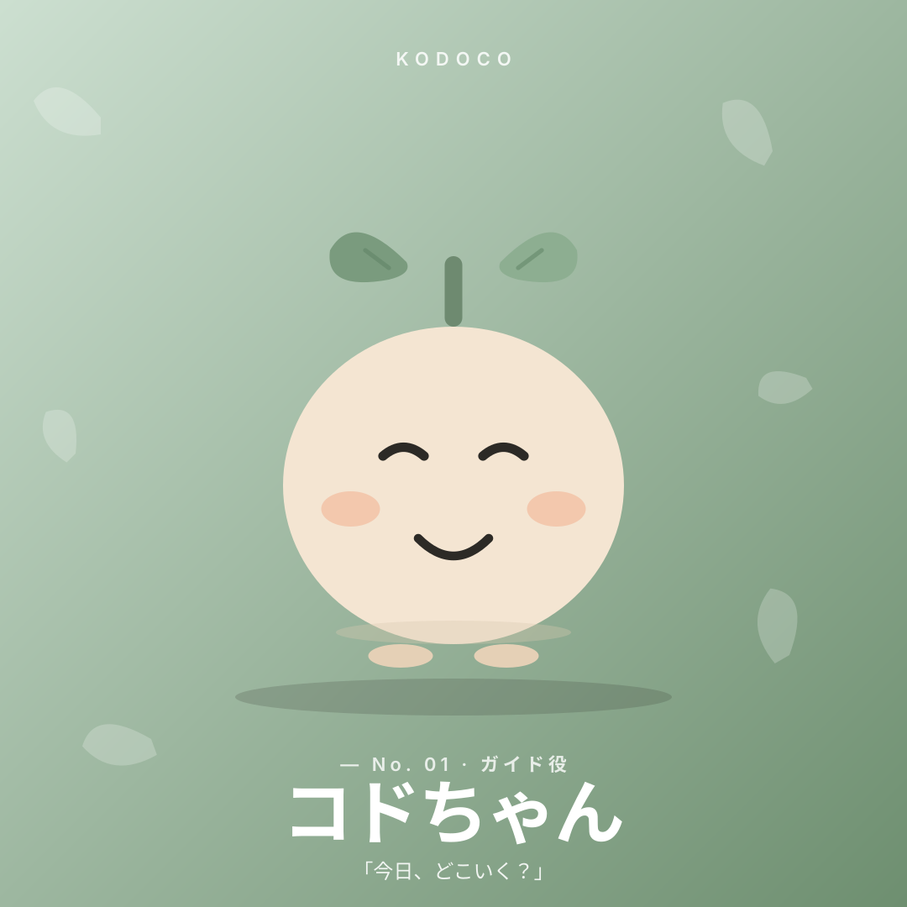
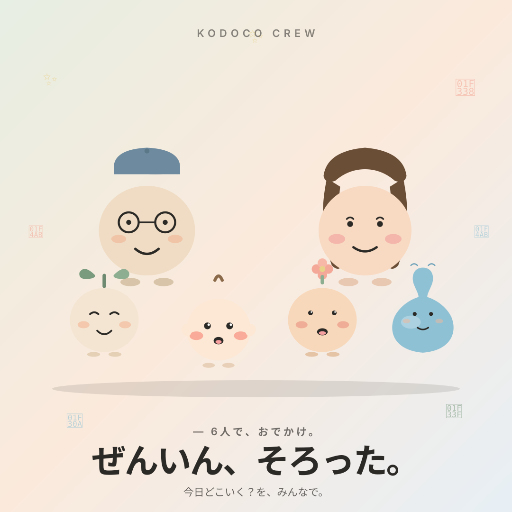
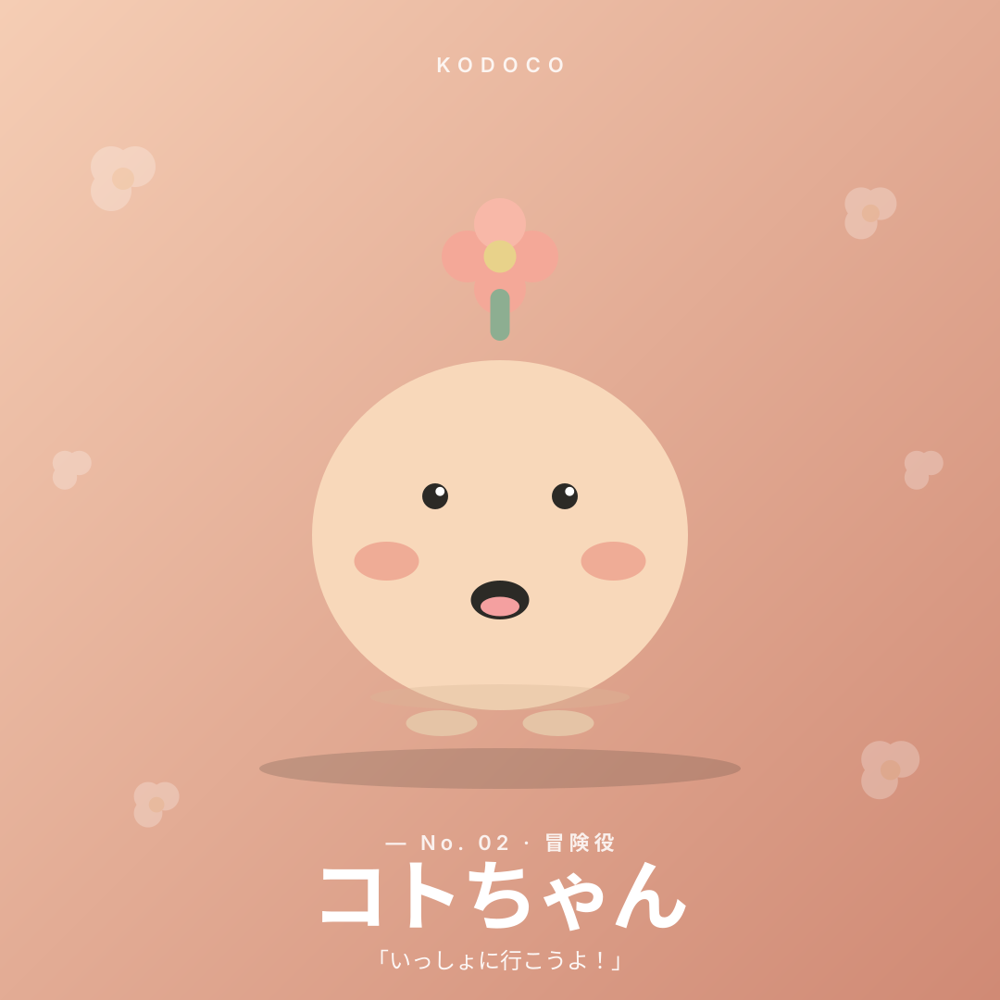
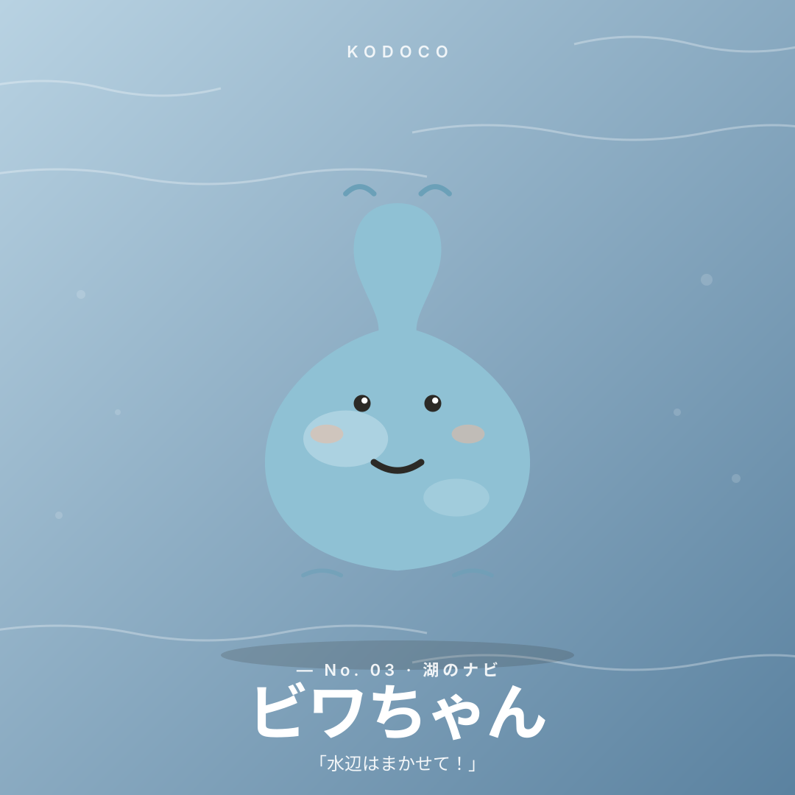
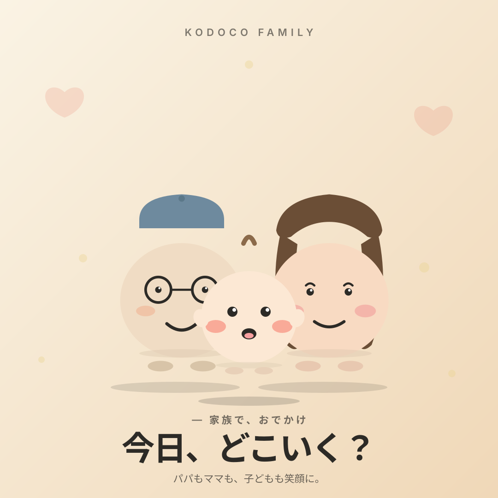

同じ会話を、無限にしていた。
「今日、どこいこっか」
「どこでもいい」
「じゃあ〇〇は？」
「それじゃない」
「どこでもいい」
「じゃあ〇〇は？」
「それじゃない」
「子連れ おでかけ 滋賀」で検索すれば、情報は山ほど出る。でも今日は雨で、子どもは4歳で、午後の2時間だけ——そこまで絞ると、結局「自分で判断してください」になる。
詰まった情報は多いのに、答えが出ない。この構造的な詰まりを、解きたかった。

— 開発日記 / the honest version
これは、きれいな設計書じゃない。
週末ごとの無限ループと、答えを1つに絞る怖さと、
滋賀・福井・三重・岐阜・京都のスポットを、自分の足で集めた話。
——木下スタジオ 木下貴博が、KODOCOを作った裏話。
「子連れ おでかけ 滋賀」で検索すれば、情報は山ほど出る。でも今日は雨で、子どもは4歳で、午後の2時間だけ——そこまで絞ると、結局「自分で判断してください」になる。
KODOCOは「子どもと、どこ行こ？」の略。日本語の口語をそのまま名前にするのは珍しい。
でも、ユーザーが検索ボックスに打ち込む言葉と、プロダクトの名前が重なるなら——探している人に、ちゃんと届く気がした。4文字、口にしやすい。子どもでも覚えられる。
設計の核心はこれ。選択肢を並べない。天気・年齢・使える時間を入れると、1スポットだけを返す。
「AにするかBにするか」という判断を、もう一つ増やさない。おでかけ情報を増やすより、決断のコストを下げることが先だった。
その日の行き先を案内するのは、10匹のオリジナルキャラクター。ぜんぶ自分で描いてデザインした。
アプリの中で「今日はここ！」と言ってくるのが、無機質な文字じゃなくてまんまるの相棒だと、ちょっと肩の力が抜ける。子どもも、キャラで場所を覚えてくれる。

スポットは、APIで機械的に集めたものじゃない。地元の人が実際に子連れで行った場所を、ひとつずつ手作業でキュレーションした。滋賀県を中心に、福井県・三重県・岐阜県・京都府まで。大津・草津・近江八幡・長浜・彦根・高島・敦賀……と、170を超えるスポット・50プラン。

口コミ、複数端末の同期、パスワードのリセット、完全無料。派手じゃないけど、家族が毎週末ちゃんと使えるには、この地味な部分が全部いる。
「使い始めるハードルをゼロに近づける」ことも、立派に設計の一部だった。
「滋賀ってなにもないよね」——ずっと聞いてきた言葉。でも、地元の人しか知らない場所、子どもが走り回れる空間、季節ごとに変わる景色が、滋賀県には、ちゃんとある。それが170を超えるスポットになった。
今は琵琶湖のそばを中心に、お隣の福井県・三重県・岐阜県・京都府まで、少しずつ広げている。都市のサービスが地方を後回しにする構造に、木下スタジオ（木下貴博）としてひとりで抵抗したい。ここ滋賀で作り、ここで使い、ここで育てる。


